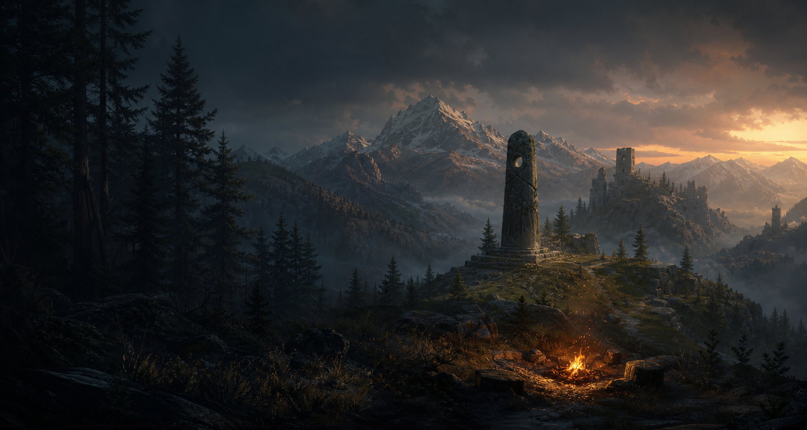

The Lost Errand
A short narrative adventure about a final delivery before a storm closes in.

Independent RPG studio
Northreach Studios is a small indie game studio creating atmospheric narrative RPGs and compact fantasy adventures, beginning with focused RPG Maker MZ titles and growing toward larger role-playing worlds.
Studio notes
Northreach Studios is focused on grounded fantasy games with readable systems, quiet atmosphere, and places that feel worth returning to.
The studio is starting small: short, complete RPG Maker MZ projects that develop the craft, tools, and design language needed for larger RPGs later.
Current roadmap
A short narrative adventure about a final delivery before a storm closes in.
A compact puzzle-adventure focused on environmental storytelling, old ruins, and simple but satisfying progression.
A quest-board RPG-lite about helping a rural settlement through small but meaningful jobs.
A single-dungeon RPG-lite focused on exploration, combat pacing, resource pressure, and a contained boss encounter.
A miniature RPG structure: town, contract, road, dungeon, boss, and return consequences.
Design pillars
Low-fantasy settings shaped by worn roads, quiet villages, old ruins, and human-scale problems.
Compact maps built around readable geography, secrets, landmarks, and reasons to step off the main path.
Movement, interaction, objectives, combat, and progression should be understandable without becoming shallow.
Quests should feel personal, choices should have weight, and even small tasks should help the world feel lived in.
Development approach
Early Northreach titles are being developed in RPG Maker MZ, supported by custom Northreach systems for parallax mapping, 4-direction player pixel movement, collision, interaction, screen transitions, dialogue polish, and objective tracking.
The aim is to finish small games first, build reliable tools, and grow toward larger RPGs without losing focus.